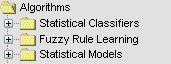

INSERT ALGORITHM
In order to add an algorithm to our experiment, you must perform the following actions:
The methods available are knowledge extraction algorithms (decision tree and rule extraction in supervised learning, neural networks, etc.).

These algorithms are classified according to the family to whom they belong. These families appear in the drop-down tree, allowing the navigation throug the different algorithms until finding the one the user is interested in, as we can see in the above picture.